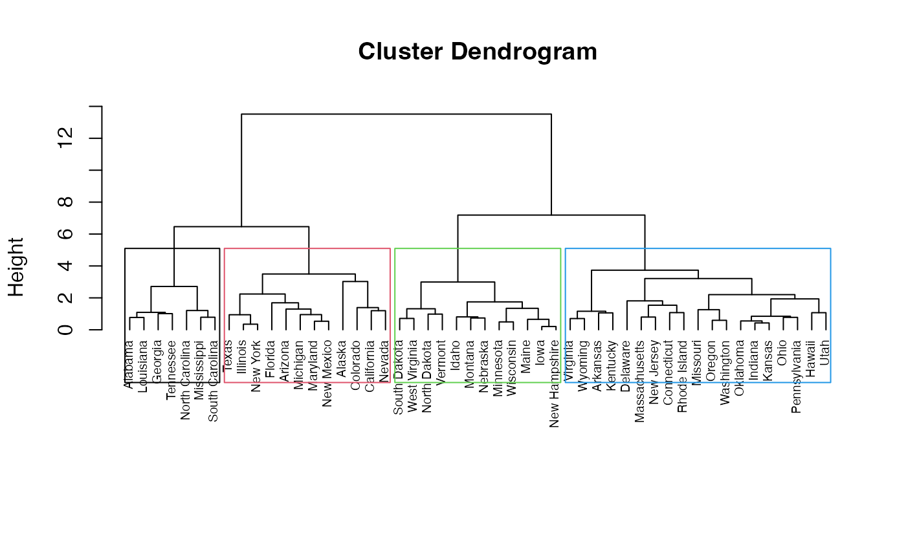
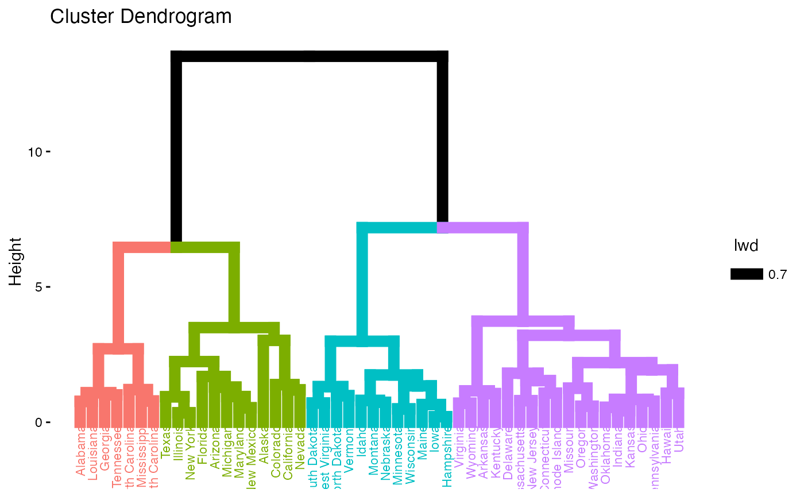
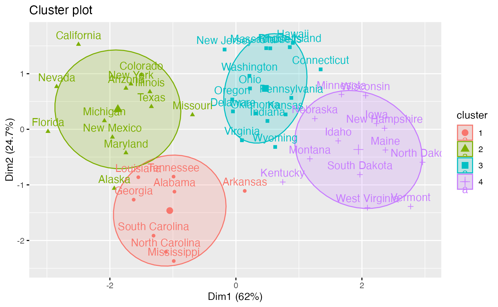

The final k-means clustering solution is very sensitive to the initial random selection of cluster centers. This function provides a solution using an hybrid approach by combining the hierarchical clustering and the k-means methods. The procedure is explained in "Details" section. Read more: Hybrid hierarchical k-means clustering for optimizing clustering outputs.
hkmeans(): compute hierarchical k-means clustering
print.hkmeans(): prints the result of hkmeans
hkmeans_tree(): plots the initial dendrogram
hkmeans(
x,
k,
hc.metric = "euclidean",
hc.method = "ward.D2",
iter.max = 10,
km.algorithm = "Hartigan-Wong"
)
# S3 method for class 'hkmeans'
print(x, ...)
hkmeans_tree(hkmeans, rect.col = NULL, ...)a numeric matrix, data frame or vector
a single integer specifying the number of clusters to be generated.
Must be at least 2 and smaller than nrow(x).
the distance measure to be used. Possible values are "euclidean", "maximum", "manhattan", "canberra", "binary" or "minkowski" (see ?dist).
the agglomeration method to be used. Possible values include "ward.D", "ward.D2", "single", "complete", "average", "mcquitty", "median"or "centroid" (see ?hclust).
the maximum number of iterations allowed for k-means.
the algorithm to be used for kmeans (see ?kmeans).
others arguments to be passed to the function plot.hclust(); (see ? plot.hclust)
an object of class hkmeans (returned by the function hkmeans())
Vector with border colors for the rectangles around clusters in dendrogram
hkmeans returns an object of class "hkmeans" containing the following components:
The elements returned by the standard function kmeans() (see ?kmeans)
data: the data used for the analysis
hclust: an object of class "hclust" generated by the function hclust()
The procedure is as follow:
1. Compute hierarchical clustering
2. Cut the tree in k-clusters
3. compute the center (i.e the mean) of each cluster
4. Do k-means by using the set of cluster centers (defined in step 3) as the initial cluster centers. Optimize the clustering.
This means that the final optimized partitioning obtained at step 4 might be different from the initial partitioning obtained at step 2.
Consider mainly the result displayed by fviz_cluster().
# \donttest{
# Load data
data(USArrests)
# Scale the data
df <- scale(USArrests)
# Compute hierarchical k-means clustering
res.hk <-hkmeans(df, 4)
# Elements returned by hkmeans()
names(res.hk)
#> [1] "cluster" "centers" "totss" "withinss" "tot.withinss"
#> [6] "betweenss" "size" "iter" "ifault" "data"
#> [11] "hclust"
# Print the results
res.hk
#> Hierarchical K-means clustering with 4 clusters of sizes 8, 13, 16, 13
#>
#> Cluster means:
#> Murder Assault UrbanPop Rape
#> 1 1.4118898 0.8743346 -0.8145211 0.01927104
#> 2 0.6950701 1.0394414 0.7226370 1.27693964
#> 3 -0.4894375 -0.3826001 0.5758298 -0.26165379
#> 4 -0.9615407 -1.1066010 -0.9301069 -0.96676331
#>
#> Clustering vector:
#> Alabama Alaska Arizona Arkansas California
#> 1 2 2 1 2
#> Colorado Connecticut Delaware Florida Georgia
#> 2 3 3 2 1
#> Hawaii Idaho Illinois Indiana Iowa
#> 3 4 2 3 4
#> Kansas Kentucky Louisiana Maine Maryland
#> 3 4 1 4 2
#> Massachusetts Michigan Minnesota Mississippi Missouri
#> 3 2 4 1 2
#> Montana Nebraska Nevada New Hampshire New Jersey
#> 4 4 2 4 3
#> New Mexico New York North Carolina North Dakota Ohio
#> 2 2 1 4 3
#> Oklahoma Oregon Pennsylvania Rhode Island South Carolina
#> 3 3 3 3 1
#> South Dakota Tennessee Texas Utah Vermont
#> 4 1 2 3 4
#> Virginia Washington West Virginia Wisconsin Wyoming
#> 3 3 4 4 3
#>
#> Within cluster sum of squares by cluster:
#> [1] 8.316061 19.922437 16.212213 11.952463
#> (between_SS / total_SS = 71.2 %)
#>
#> Available components:
#>
#> [1] "cluster" "centers" "totss" "withinss" "tot.withinss"
#> [6] "betweenss" "size" "iter" "ifault" "data"
#> [11] "hclust"
# Visualize the tree
hkmeans_tree(res.hk, cex = 0.6)

# or use this
fviz_dend(res.hk, cex = 0.6)

# Visualize the hkmeans final clusters
fviz_cluster(res.hk, frame.type = "norm", frame.level = 0.68)
#> Warning: argument frame.type is deprecated; please use ellipse.type instead.
#> Warning: argument frame.level is deprecated; please use ellipse.level instead.

# }